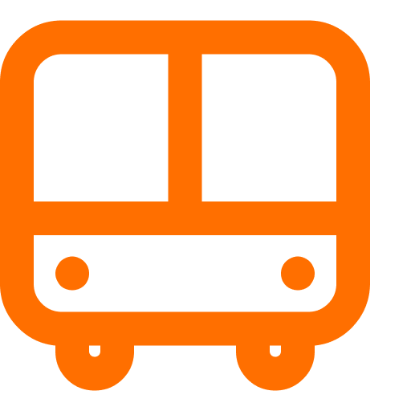
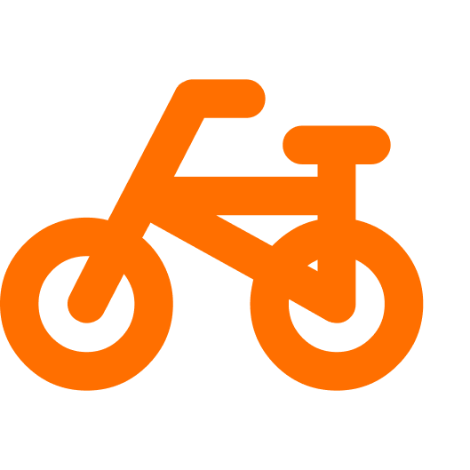
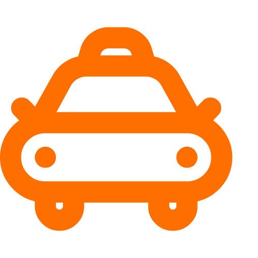
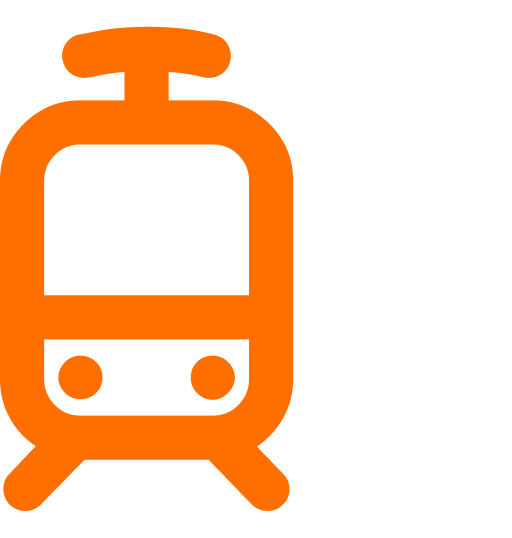

Tranvías en Ámsterdam

Autobuses en Ámsterdam

Bicicletas en Ámsterdam

Taxis en Ámsterdam

.
Aunque Ámsterdam es una ciudad idónea para recorrer a pie, no está de más conocer sus medios de transporte.
Cada día se realizan más de un millón de trayectos en transporte público, algo que es sorprendente si se tiene en cuenta que la población de Ámsterdam es de tan sólo 750.000 habitantes y que la mayoría de ellos tiene al menos una bicicleta.
Ámsterdam es una ciudad hecha para el transporte público, la dificultad para circular en coche por el centro de la ciudad y el alto coste de aparcamiento hacen que los amsterdaneses se lo piensen dos veces antes de utilizar (o comprar) el coche.
Cuando el tiempo no acompaña o para visitar las zonas más alejadas del centro, es la mejor opción. Ordenados por utilidad, estos son los principales medios de transporte en Ámsterdam.